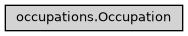

Occupation
- class ase2sprkkr.sprkkr.occupations.Occupation(dct, site=None, update_atoms=False)[source]
Occupation of the atomic site, given by AtomicType : value
The value determine the probability, that a given atomic type will be found on a given place (which can be used e.g. for computing alloys).
Class hierarchy
Constructor
- Parameters
dct (Dict[Union[AtomicType, str], float]) –
site (Optional[Site]) –
- __init__(dct, site=None, update_atoms=False)[source]
- Parameters
dct (Dict[Union[AtomicType, str], float]) –
site (Optional[Site]) –
- copy(site=None)[source]
Create a copy of the object, associated with a given site.
- Parameters
site (Optional[Site]) –
- Return type
- set(dct, update_atoms=True)[source]
Set (replace) the occupation data.
The method automatically updates the symbols, atomic numbers and the occupancy property (if exists) of the underlying Atoms object.
- Parameters
dct (Dict[Union[AtomicType, str], float]) –
- Return type
None
- atomic_type(name)[source]
Find the corresponding atomic type according to the provided argument.
- Parameters
name (Union[str, int, AtomicType]) – The identification of the atomic type. If it is integer, returns the n-th atomic type (according to the orderd supplied when the occupation is set). If it is a string, the first atomic type of given chemical element is returned If it is AtomicType, it is returned “as is”
- Return type
- replace_type(name, to)[source]
Replace the given atomic type (see
atomic_type, how it can be identified) by the new one (given either by AtomicType or by its chemical symbol)- Parameters
name (Union[str, int, AtomicType]) –
to (Union[str, AtomicType]) –
- property primary_atomic_type
Return the atomic type. If there are more atoms on the site, return the one with the largest occupation
- property primary_atomic_number
Return the atomic number of the atom at the site. If there are more atoms on the site, return the “main one”.
- property primary_symbol
Return the chemical symbol of the atom at the site. If there are more atoms on the site, return the “main one”.
- _normalize(to=1.0, except_from=None)[source]
Normalizes occupation so the sum will be equal to the value ‘to’ (by default to 1.). If there are no None values, all the values are multiplied by the same number to make their sum equal to to. If there are None values, the remainder to the ‘to’ value is equally divided among them.
- Parameters
value (float) – Desired value
except_from (AtomicType) – Skip the given atom during normalizing
- property as_dict
- property total_occupation
- static to_occupation(occupation, site)[source]
Create an occupation object associated with the given sites object
- atomic_types()[source]
Returns the atomic types that can be present on the site.
- Return type
Iterable[AtomicType]